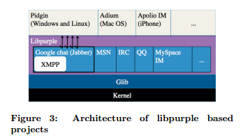

2017/07/20 - (Paper) Implementing Instant Messaging Using Named Data¶
Jiangzhe Wang∗ , Chunyi Peng∗ , Chiyu Li∗ , Eric Osterweil† , Ryuji Wakikawa‡ , Pei-chun Cheng∗ , Lixia Zhang∗
Published in 2010
Link : ndnpurple.pdf
Introduction¶
This approach highlights that some users and applications , such as IM and VoIP , may care more about the data that they can get from the network than they do about how it was delivered.
Network communications from a data-oriented perspective , it becomes straightforward to solve the three challenges :
- one can directly name the data instead of naming its container.
- secure the data itself instead of the communication channels.
- deliver data to interested users rather than specific locations, removing the need for centralized server.
Libpurple based IM application¶
Depending on the protocols specified , libpurple [1] runs the corresponding state machine by monitoring events injected from upper layer applications or triggered by lower layer network event.
In order to send a message out , application layer uses the appropriate chat protocol library to construct a message and pass it to libpurple.
NDNPurple Design¶
Design issue¶
- Name convention : How to assign a unique name for each piece of data?
- Name discovery : How to discovery these names for NDN interests in a distributed way?
- Membership management : Who joins or leaves a chat room? Who are still active in a chat room?
Name Convention¶
Provide unique names by combining sequence number and user namespace.
[protocol]:/[roomID]/[UserID]/[SeqNum]
Name Discovery¶
The core technique of name discovery is to learn active users and latest sequence number.
NDNPurple pre-defines a namespace for queries, which is known to all participants, e.g. ccnx:/demo/user
Active users periodically claim “I am here” by sending an interest named ccnx:/demo/user/[UserName]. Similarly , user can broadcast his or her latest sequence number using the interest ccnx://demo/latest/[UserName]/[SeqNumber].
Membership Management¶
Local active User Table (AUT) , where each entry is associated with an expiration timer. It resets the entry timer if it receives the corresponding active user message before timeout, otherwise it removes this entry after timeout.
Implementation¶
- Modify libpurple to support NDN that is essentially an abstract layer above sockets.
- To make XMPP [2] backward compatible => A proxy-based solution that allows XMPP to work as usual.

The proxy can communicate with others over NDN network through the NDN daemon.
Conclusion¶
While NDN is an exciting new architecture whose design embraces the evolving requirements of the Internet, an import step in its deployment in adaption of existing applications to its architecture.
From this effort we have digested serval key lessons that we feel will greatly inform future porting efforts :
- NDN requires each packet to have a unique name. Thus, deciding how applications must name their data is critical.
- In a multicast application, where more than one user may produce data simultaneously, each user should be assigned a unique name. This facilitates a design in which each packet can easily be identified by its user’s name plus sequence number.
- Embedding a pseudo-proxy within the existing libpurple state machine is able to avoid modifying the existing application code by injecting a new NDN shim layer.
My Summary¶
I think using pseudo-proxy is a simple way to make IP-based application communicate over NDN network. All we need is just develop a proxy as a translator to make NDN network recognize these message packets.
NDNPurple is just a simple library to make a IP-based chat application can run over NDN. According to this concept , I think it is possible to run ChronoSync [3] as a proxy server on the NDN side. And the other side , this proxy can connect a chat applicaion like IRC, NDN , etc. Just implement ChronoSync design on proxy instead of NDNPurple and we can realize the new applicaiton.
Reference¶
| [1] | libpurple : https://developer.pidgin.im/wiki/WhatIsLibpurple |
| [2] | XMPP wiki : https://zh.wikipedia.org/wiki/XMPP |
| [3] | ChronoSync : http://irl.cs.ucla.edu/~zhenkai/papers/chronosync.pdf |